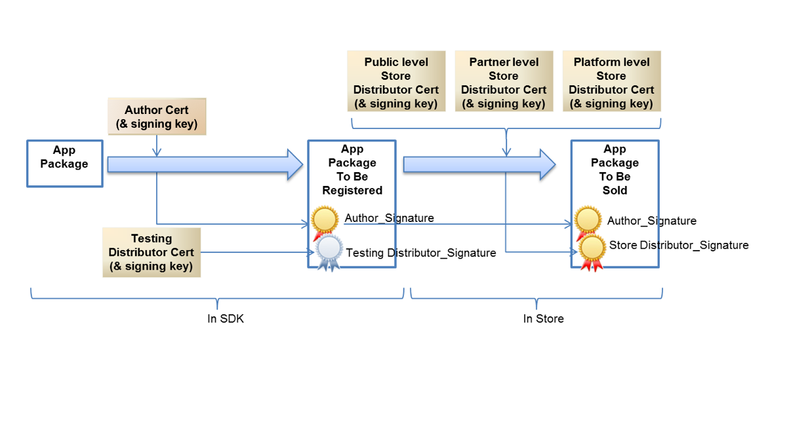

Application Hardening: Best practices to apply to the build and release of user space applications, in order to reduce the number of attack surfaces used by potential attackers.
The term of Application (App) has a very wide definition in AGL. Almost anything which is not in the core Operating System (OS) is an Application. Applications can be included in the base software package (image) or can be added at run-time.
Application containment is achieved using the following protections:
- Linux Native protection
- Mandatory Access Control (MAC)
- AGL Platform protections
- Origin Tracking and Validation
- Application Privilege Management and Enforcement via Cynara
- Authenticated Transport via D-Bus
Application Types
AGL provides a framework for applications to be written in different forms:
- Web application: HTML5 + JavaScript
- Qt application: in a QML file
- Native application: in C
While there is no harm in providing multiple types of applications, from a security perspective this does increase the attack surface for an intruder. The application framework (AppFw) consists of a number of utilities and daemons which provide context for the applications. Isolation is provided through SMACK labels.
Application Store
Although the Tizen system has defined a system of App signing and signing flow to avoid the spread of unauthorized Apps that might contain malware. At this point, it is unclear how much of this flow AGL will adopt. However, judging from the experience, it is an essential topic. For example, the Google Play Store controls the authorization of Apps through signing, and still, there are many accounts of Apps containing malware on the store.
Tizen defines 5 levels of certificates and signing at each level, including an author, testing distributor, public level store distributor, partner level store distributor, and platform level store distributor. AGL may define a different number of third parties, but at a minimum an author and store distributor should be defined.

Once the number of signatures has been established, verification of those signatures needs to be done at a minimum at installation time on the AGL device. It is important to ensure the robustness/integrity of the public key used for signature verification. If the public key is modified, then this compromised key can be used to verify an attacker's private key signature.
Further to this, installation-time verification is limited. Attacks can happen to apps in-memory at runtime. Any modifications made after installation will be missed by installation-time verification. Integrity verification that runs during execution makes for a more complete security story.
Acronyms and Abbreviations
The following table lists the terms utilized within this part of the document.
| Acronyms or Abbreviations | Description |
|---|---|
| 3GPP | 3rd Generation Partnership Project |
| CASB | Cloud Access Security Broker |
| DAST | Dynamic Application Security Testing |
| DPI | Deep Packet Inspection |
| IDS | Intrusion Detection Systems |
| IPS | Intrusion Prevention Systems |
| IPSec | Internet Protocol Security |
| LSM | Linux Security Module |
| MITM | Man In The Middle |
| OSI | Open Systems Interconnection |
| SATS | Static Application Security Testing |
Local
| Domain | Improvement |
|---|---|
| Application-Installation-1 | Talk about AppFw offline mode. |
Installation
Applications can be delivered and installed with the base image using a special offline-mode provided by the AppFw. Apps can also be installed at run time.
During early release, default Apps are installed on the image at first boot.
| Domain | Object | Recommendations |
|---|---|---|
| Application-Installation-1 | AppFw | Provide offline-mode in order to install app with the base image. |
| Application-Installation-2 | Integrity | Allow the installation of applications only if their integrity is good. |
Local
Privilege Management
Application privileges are managed by Cynara and the security manager in the AppFw. For more details, please refer to the AppFw documentation in Platform part.
App Signature
| Domain | Improvement |
|---|---|
| Application-Signature-1 | Add content (see secure build in Secure development part). |
Services
| Domain | Improvement |
|---|---|
| Application-Services-1 | Add content (Which services?). |
| Application-Services-2 | Add Binder. |